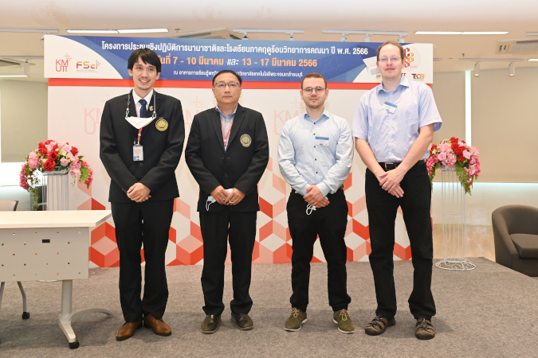

News
- New group member: Antonia Stavemann
Antonia Stavemann is joining our group as a Ph.D. student. Welcome!
Guest: Kirk SoodhalterKirk Soodhalter from Trinity College, Dublin, is visiting us 2025-04-21 through 2025-05-23. His visit is supported through the Romberg Program of the Heidelberg Graduate School of Mathematical and Computational Methods for the Sciences HGS MathComp.
New group member: Johannes MansteinJohannes Manstein is joining our group as a Ph.D. student. Welcome!
Advisory offer for AIMMS-MOPTA Optimization Modeling CompetitionThe 17th AIMMS-MOPTA Optimization Modeling Competition is an international competition open to graduate and undergraduate students. You can compete in teams of up to three participants for the prizes awarded for solving an aviation personell scheduling problem. Teams are expected to list Each team is required to declare a team advisor with whom the team may consult about the problem and their solution. We encourage promising teams of motivated students to contact us via an email, if you would like for one of our team members to fill this role. The slides from our kick-off meeting on 2025-01-25 can be found here.
Open student assistant (HiWi) positionStudent assistant position (6 months, up to 40 hours per month)
Ann-Kathrin Rahm and Roland Herzog are looking for a student assistant to work on an exploratory, interdisciplinary project between mathematics and cardiology.
If you are interested, please contact Roland Herzog for more information.
Guest: Marius WillnerMarius Willner from the University of Ulm is visiting us on 2024-12-19 to give a presentation on Riemannian Optimization on Tensor Network Manifolds.
New group member: Hannah RickmannHannah Rickmann is joining our group as a Ph.D. student. Welcome!
New group member: Nico HaafGuest: Johannes PfeffererJohannes Pfefferer from the University of the Armed Forces Munich is visiting us 2024-07-09 through 2024-07-11. He is giving a talk in the optimization seminar.
Guest: Stefan UlbrichStefan Ulbrich from the Technical University of Darmstadt is visiting us on 2024-07-10. He is giving a talk in the IWR colloquium.
Guest: Andreas WarkentinAndreas Warkentin from the University of Kassel is visiting us 2024-07-03 through 2024-07-04. He will give a talk on Aspects of Ferroelectric Energy Harvesting in our optimization seminar 2024-07-03 at 3pm.
Open PhD positionsTwo PhD positions - E 13 TV-L 75% - in Heidelberg and Berlin
Within our project on “Operator Learning for Optimal Control: Approximation and Statistical Theory” in the DFG SPP 2298 “Foundations of Deep Learning”, we are looking for two excellent PhD candidates. We actively encourage applications from individuals of underrepresented backgrounds. We value diversity and are committed to creating an inclusive environment.
If you are interested, please contact Evelyn Herberg for more information.
Project accepted in SPP 2298Evelyn Herberg’s, Sven Wang’s and Jakob Zech’s project proposal “Operator Learning for Optimal Control: Approximation and Statistical Theory” has been accepted in the DFG’s SPP 2298. Congratulations!
Guest: Kirk SoodhalterKirk Soodhalter from Trinity College, Dublin, is visiting us 2024-06-03 through 2024-06-28. His visit is supported through the Romberg Program of the Heidelberg Graduate School of Mathematical and Computational Methods for the Sciences HGS MathComp.
Guest: Constantin ChristofConstantin Christof from the Technical University of Munich is visiting us 2024-05-21 through 2023-05-23. He will give a talk on Directional differentiability for solution operators of vectorial sweeping processeswith applications in optimal control in our optimization seminar 2023-05-22 at 11am.
Guest: Frederik KöhneFrederik Köhne from the University of Bayreuth is visiting us 2024-05-14 through 2023-05-16. He will give a talk on Adaptive Step Sizes for Preconditioned Stochastic Gradient Descent in our optimization seminar 2023-05-15 at 11am.
Heidelberg half marathonRoland Herzog, Manuel Weiß, Peter Bastian and Michael Winckler participated in the Heidelberg half marathon 2024. As Team IWR they achieved rank 108 with their top 3 times summing up to 5:53:27.
PhD defence Masoumeh HashemiMasoumeh Hashemi has successfully defended her PhD thesis “Optimal Control of Nonlocal Partial Differential Equations” today. Congratulations!
Advisory offer for AIMMS-MOPTA Optimization Modeling CompetitionThe 16th AIMMS-MOPTA Optimization Modeling Competition was posted recently and deals with the role of green hydrogen in renewable-energy grids. The competition features various levels of prizes and is geared towards graduate or advanced undergraduate students. Each team is required to declare a team advisor with whom the team may consult about the problem and their solution.
We would be greatly appreciate the chance to advise a promising team of motivated students, so please send us an email until the end of February, if you would like for one of our team members to fill this role.
IWR Managing DirectorRoland Herzog has been elected Managing Director of the IWR.
Evelyn Herberg accepted as GAMM JuniorEvelyn Herberg has been selected to become a member of the GAMM’s council of young researchers, the GAMM Juniors. Congratulations!
Conference Announcement: EUCCO 2023The sixth edition of the European Conference on Computational Optimization (EUCCO) will be held in Heidelberg from 2023-09-25 until 2023-09-27 with the scoop group acting as local organizer. More information can be found on the conference’s event page.
Career: Maurício Silva LouzeiroOur group’s former postdoc Maurício Silva Louzeiro was appointed assistant professor at the Federal University of Goiás, Brazil.
Guest: Hajg JasaHajg Jasa from NTNU Trondheim, Norway, is visiting us 2023-09-04 through 2023-12-21.
Guest: Kirk SoodhalterKirk Soodhalter from Trinity College Dublin, Ireland, is visiting us 2023-09-04 through 2023-09-08.
Guest: Andrea PetrocchiAndrea Petrocchi from the University of Konstanz is visiting us 2023-06-28 through 2023-06-30. He is giving a talk in the optimization seminar.
Guest: Martin StollMartin Stoll from Chemnitz University of Technology is visiting us 2023-06-21 through 2023-06-23. He is giving a talk in the IWR Scientific Computing Seminar.
Guest: Bastian DittrichBastian Dittrich from the University of Würzburg is visiting us 2023-06-14. He is giving a talk in the optimization seminar.
Guest: Marco BernreutherMarco Bernreuther from the University of Konstanz is visiting us 2023-05-25. He is giving a talk in the optimization seminar.
Guest: Hannes MeinlschmidtHannes Meinlschmidt from the University of Erlangen-Nuremberg is visiting us 2023-05-17. He is giving a talk in the IWR Scientific Computing Seminar, jointly with the Applied Analysis Seminar.
Guest: Konstantin SonntagKonstantin Sonntag from the University of Paderborn is visiting us 2023-05-09 through 2023-05-11.
Guests: Anton Schiela, Frederik KöhneAnton Schiela and Frederik Köhne from the University of Bayreuth are visiting us 2023-04-26 through 2023-04-28.
Guest: Michael HinzeMichael Hinze from the University of Koblenz is visiting us 2023-04-19 through 2023-04-21. He is giving a talk in the IWR Scientific Computing Seminar.
Guest: Frederik KöhneFrederik Köhne from the University of Bayreuth is visiting us 2023-03-29 through 2023-03-31.
Short Course: Introduction to OptimizationComplementing the standard teaching of the 2022 winter semester, the scoop group is offering a compact course Introduction to Optimization as part of the Heidelberg Graduate School for Mathematical and Computational Methods in the Sciences’ (HGS MathComp) curriculum.
Computational Science Summer School 2023Andreas Naumann and Viktor Martinek successfully taught the Data Science Workshop at KMUTT, Bangkok.

© Bangmod news
European Mathematical Society Young Academy (EMYA)Evelyn Herberg has been selected to become a member of the inaugural cohort of the European Mathematical Society Young Academy (EMYA).
Guests: Stephan Schmidt, Lukas BaumgärtnerStephan Schmidt and Lukas Baumgärtner from Humboldt University, Berlin are visiting us 2023-03-06 through 2023-03-10.
2 Ph.D. Student Positions: DFG Research Unit PoPULARWe have two openings for Ph.D. students within the DFG Research Unit PoPULAR (Printed & Stable Organic Photovoltaics from Non-fullerene Acceptors). The successful candidates will work within Project P6 (Phase field methods, parameter identification and process optimisation) led jointly by Martin Stoll, Chemnitz, Jan-Frederik Pietschmann and Roland Herzog. Please refer to the detailed description for more information.
Advisory offer for AIMMS-MOPTA Optimization Modeling CompetitionThe 15th AIMMS-MOPTA Optimization Modeling Competition was posted on 2023-02-02 and deals with planning electric vehicle charging stations. The competition features various levels of prizes and is geared towards graduate or advanced undergraduate students. Each team is required to declare a team advisor with whom the team may consult about the problem and their solution.
We would be greatly appreciate the chance to advise a promising team of motivated students, so please send us an email unti the end of February, if you would like for one of our team members to fill this role.
Guest: Konstantin SonntagKonstantin Sonntag from the University of Paderborn is visiting us 2023-01-25 through 2023-01-26.
New Group Member: Leonie KreisLeonie Kreis is joining our group as a Ph.D. student. She will be working on the DFG-funded project “Multilevel Architectures and Algorithms in Deep Learning” of the DFG Priority Program 2298 “Theoretical Foundations of Deep Learning”. Welcome!
IWR Board of DirectorsRoland Herzog has been elected to the Managing Directorate of the IWR, effective January 2023.
Short Course: Introduction to Optimization** Attention! Due to health reasons, we will unfortunately have to postpone this short course to another time. We will post more information here as soon as possible. We apologize for the inconvenience.***
Complementing the standard teaching of the 2022 winter semester, the scoop group is offering a compact course Introduction to Optimization as part of the Heidelberg Graduate School for Mathematical and Computational Methods in the Sciences’ (HGS MathComp) curriculum.
Seminar Announcement: Selected Topics in OptimizationIn the summer semester of 2022, the SCOOP group at IWR, Heidelberg University is organizing a seminar on selected topics in optimization. The seminar is intended for both undergraduate (bachelor) and graduate (master) students in mathematics, applied computer sciences and scientific computing and will concern a wide range of topics in optimization that can be tailored to the individual participants. The seminar is suitable for participants with little prior knowledge in optimization but also an obvious extension for advanced topics that build on the classes “Grundlagen der Optimierung”, “Nichtlineare Optimierung” or “Konvexe Optimierung”.
Feel free to contact us if you have questions on the seminar.
Guest: John PearsonJohn Pearson from the University of Edinburgh is visiting us 2022-09-05 through 2022-09-09.
New group member: Evelyn HerbergEvelyn Herberg is joining our group as a postdoctoral researcher. Welcome!
New group member: Reyhaneh MajidiReyhaneh Majidi is joining our group as a Ph.D. student. She will work on the Klaus-Tschira foundation-funded project Optimization and visualization support system for cardiac arrhythmia management within the Informatics4Life Initiative. Welcome!
Ph.D. Defense: Estefanía LoayzaEstefanía Loayza Romero successfully defended her Ph.D. thesis A Discrete Perspective on PDE-constrained Shape Optimization Problems. Congratulations!
New group member: Viktor MartinekViktor Martinek is joining our group as a Ph.D. student. He will work on the DFG-funded project Machine Learning and Optimal Experimental Design for Thermodynamic Property Modeling within the Priority Program SPP 2331: Machine Learning in Chemical Engineering. Welcome!
New group member: Karina KovalKarina Koval is joining our group as a postdoctoral researcher. She will work on the Carl-Zeiss foundation-funded project Physical Models and Deep Learning for Imaging and Cancer Treatment. Welcome!
New group member: Georg MüllerGeorg Müller is joining our group as deputy group leader. Welcome!
New group member: Manuel WeißManuel Weiß is joining our group as a Ph.D. student. He will work on the DFG-funded project A Calculus for Non-Smooth Shape Optimization with Applications to Geometric Inverse Problems within the Priority Program SPP 1962: Non-Smooth and Complementarity-based Distributed Parameter Systems: Simulation and Hierarchical Optimization. Welcome!
New group member: Karthik PaithankarKarthik Paithankar is joining our group as head of IT, starting in May 2021. Welcome!
Group Scientific Computing and Optimization (SCOOP)Roland Herzog accepted the position as professor in scientific computing at IWR, Heidelberg University and will be heading the new research group Group Scientific Computing and Optimization (SCOOP), starting in April 2021.